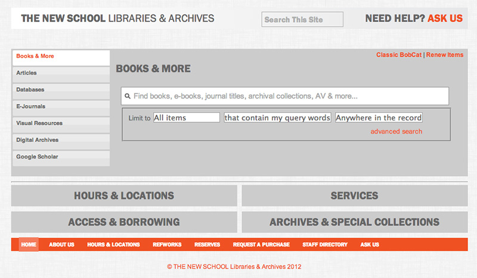
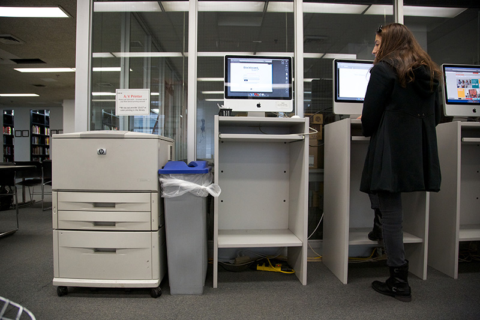
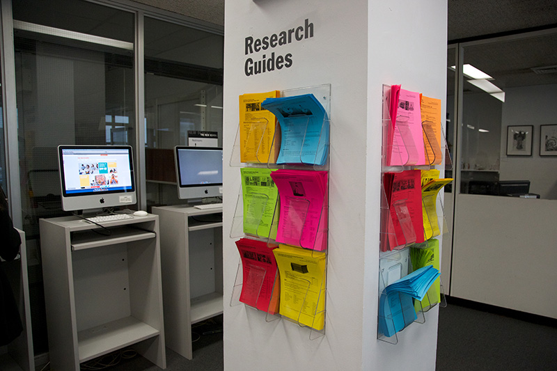

The research stations
can be used to access the
library's catalogue1
, access online resources and to
print documents.2
Printed
research guides

detail additional resources and locations for particular subjects. There is a
study area
in between the research stations and the entrance. Books can be accessed in
the stacks nearby.
1
The library's catalogue can be accessed at http://library.newschool.edu/
2
There are three printers in the library. One in the quiet study area, a second by the research stations and a third colour photocopier by the periodicals.